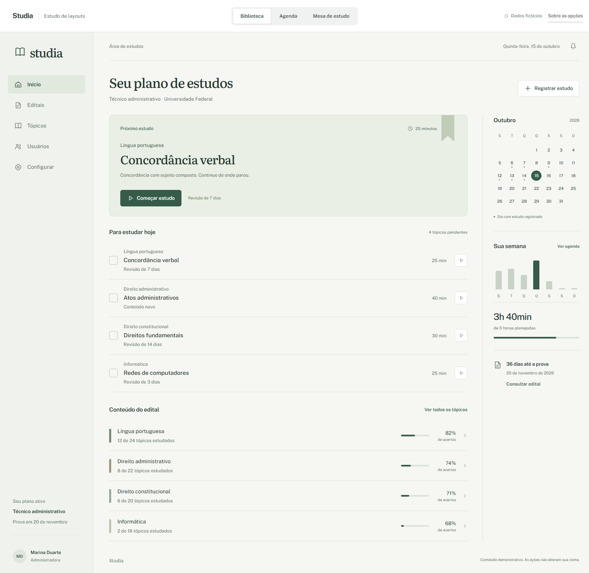

Biblioteca
Índice por matéria e uma lista clara do que estudar. Uma opção para consulta, leitura e revisões.
Explorar BibliotecaStudia / Estudo visual
Mesmas funções e conteúdo, com estruturas diferentes. Abra uma proposta para navegar pelas telas e comparar no celular.
Protótipo com dados fictícios